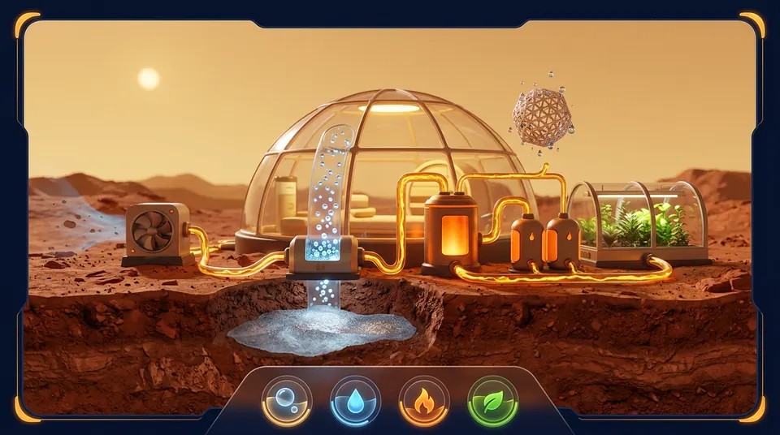

第一期任务
每个任务从一个问题出发:先猜,再动手,最后揭晓。不排名、不计时。
星球篇 · 即将点亮
元素离开恒星,变成岩石和行星。不同的星球,有不同的化学。

元素起源周期表
每个元素按它主要诞生的地方上色。完成任务,亲手点亮它们。
来源为简化示意:许多元素有不止一个来源,这里只标主要的一个。科学背景可参考 SDSS 关于元素起源的介绍。
工坊七匠
七位向导,各来自一项化学前沿成果。他们只提问,不直接给答案。
从一颗恒星里,炼出整个世界
每个任务从一个问题出发:先猜,再动手,最后揭晓。不排名、不计时。
元素离开恒星,变成岩石和行星。不同的星球,有不同的化学。

每个元素按它主要诞生的地方上色。完成任务,亲手点亮它们。
来源为简化示意:许多元素有不止一个来源,这里只标主要的一个。科学背景可参考 SDSS 关于元素起源的介绍。
七位向导,各来自一项化学前沿成果。他们只提问,不直接给答案。